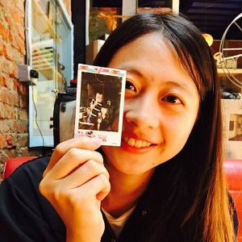
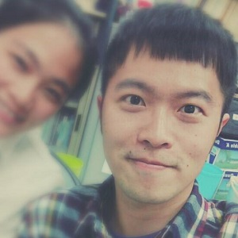
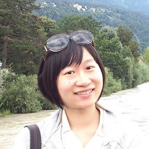
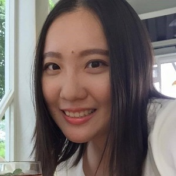
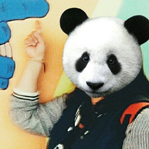
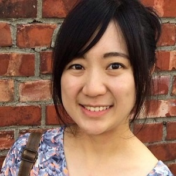
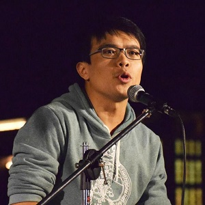

OUR TEAM 幕後團隊
沒有這群幕後功臣 The Little Big Things 將永遠只是構想

文編組長 陳婷玟
最重要的小事 是什麼
在畢業前特別有感觸
離開校園之後到底身懷了那些絕技可以在職場行動自如
小時候蠢蠢可愛的夢想到底有沒有實現的一天
是不是因為某個憧憬或是一個衝動
就踏入某系就讀 或進了某行業求職
前往未來有好多道路
但真心只有一個
夢想可以很大
誠心誠意地完成一件小事
也是人生中的一大選擇啊
希望透過各行各業工作者的經歷分享
能使你找回當初對夢想的悸動和理想的實踐力

文編/粉專 林思婷
一直覺得如果可以在更小的年紀確定自己的志向，那麼夢想就可以走得更順更遠。期許TLBT能提供一個平台讓大家接觸更多工作選項，也把每個工作的幸福或艱辛帶到大家面前。過程中也慢慢體會到，世界之所以能好好運轉就是因為這些每個人在努力的小事推動的，因此，每件小事都極其重要。
文編/FB粉專 林思婷
tingmms@gmail.com
一直覺得如果可以在更小的年紀確定自己的志向，那麼夢想就可以走得更順更遠。期許TLBT能提供一個平台讓大家接觸更多工作選項，也把每個工作的幸福或艱辛帶到大家面前。過程中也慢慢體會到，世界之所以能好好運轉就是因為這些每個人在努力的小事推動的，因此，每件小事都極其重要。
參與文章 :
其他貢獻 :
FB上每一篇文章。對大大小小事的意見。
文編 林欣愉
希望這個平台可以協助孩子們對於各行各業有更多想像與認識，並且及早思考未來的方向，同時關心社會上每個角落正在發生的每一件小事，每個人的努力與貢獻就像零件一樣讓社會這個齒輪得以運轉。也期許我們的工作團隊在未來能以更成熟、完備的樣貌落實我們的理念。

文編 傅 喻
願這網站能跳脫出一般思維、刻板印象，給予孩子的未來與夢想，鋪上一條更廣、更遼闊的想像空間。
文編 傅 喻
world1earth2@gmail.com
願這網站能跳脫出一般思維、刻板印象，給予孩子的未來與夢想，鋪上一條更廣、更遼闊的想像空間。
參與文章 :
其他貢獻 :
暫無，閒置偷懶打混人員（大誤）

美編 曾雅慈
哪天
我的畫能成為藍天白雲裡的一抹虹，
那便是我生命中
最重要的小事！
可以和強大的TLBT團隊合作是我的榮幸，
也感謝執行長大大讓我任性的專職插畫設計。

美編 蘿拉小姐
因緣際會下進入了TLBT，既然進來了就決定賴著不走了哈哈！願TLBT能讓小朋友的未來有更多的選擇性，亦做出最好的(符合的)選擇！也希望大家會喜歡我的插畫喔嘻嘻！

攝影、美編 蔡嘉昇
改變，從現在的國中生開始。希望十年後的每個人，都能找到自己最適合、也最開心的小事。

美編 jenny 周栢萱
因朋友的介紹第一次知道TLBT 這個團隊，覺得這個團隊相當相當相當厲害，很榮幸能成為這個團隊的一員！
plunk: http://www.plurk.com/jjeeennnyyy/invite-
歡迎跟我聊聊天，但目前他還是空的就是了xd
美編 jenny 周栢萱
tingmms@gmail.com
因朋友的介紹第一次知道TLBT 這個團隊，覺得這個團隊相當相當相當厲害，很榮幸能成為這個團隊的一員！
plunk: http://www.plurk.com/jjeeennnyyy/invite-
歡迎跟我聊聊天，但目前他還是空的就是了xd
參與文章 :
其他貢獻 :
目前新人一枚....

採編組長 簡廷軒
教育這份使命感，一直告訴我該做更多有意義的事情，只要能影響一個孩子，我們所做的就值得了！真心希望每個孩子都能找到最適合自己的路！:)

採訪、編輯 王曉淇
自己也有一個位於中學時期的妹妹，又是立志當老師，因此對於此團隊的理念與目標十分贊同。雖然自己只是盡棉薄之力，但絕對是很用心地投入，期許在我們TLBT團隊的努力之下，孩子們能從中得到一點省思或收穫，便是最大的成就感了！

文編 魏琳育
其他貢獻 :
文編 魏琳育
To Infinity And Beyond.
期望這個平台能夠帶孩子們看得更遠，看得更多。 找到自己真正想要的未來。
文編 魏琳育
ponz.com@gmail.com
To Infinity And Beyond.
期望這個平台能夠帶孩子們看得更遠，看得更多。 找到自己真正想要的未來。
參與文章 :
其他貢獻 :
無，我會繼續努力QQ

採編 李相慶
很高興能夠參與這個團隊，即使能盡上微薄之力也在所不辭！

執行長 鄭茜文
其他貢獻 :
執行長 鄭茜文
在代課的這一年，接觸了許多孩子，在課堂中不經意的聊天下，才發現原來孩子對未來想從事的職業，所知道的東西是如此的不足，甚至也不知該如何準備起，在和老師及朋友的討論過後，就決定要來架設一個撰有各行各業故事的平台，然後連結學校輔導室，讓更多孩子能更早去思考，更有方向去準備自己的未來志向。很感謝在這個平台什麼都沒有的情況下，有一群身懷絕技又對教育有熱情的夥伴們加入TLBT團隊，沒有他們，TLBT這個夢就只會繼續被我放在心裡，希望TLBT在成熟之後，能真的落實到各個學生周遭，並且能把我們的初衷傳達給他們！
執行長 鄭茜文
minemimi@livemail.tw
在代課的這一年，接觸了許多孩子，在課堂中不經意的聊天下，才發現原來孩子對未來想從事的職業，所知道的東西是如此的不足，甚至也不知該如何準備起，在和老師及朋友的討論過後，就決定要來架設一個撰有各行各業故事的平台，然後連結學校輔導室，讓更多孩子能更早去思考，更有方向去準備自己的未來志向。很感謝在這個平台什麼都沒有的情況下，有一群身懷絕技又對教育有熱情的夥伴們加入TLBT團隊，沒有他們，TLBT這個夢就只會繼續被我放在心裡，希望TLBT在成熟之後，能真的落實到各個學生周遭，並且能把我們的初衷傳達給他們！
參與文章 :
其他貢獻 :
身兼採訪、攝影數職，平時也會處理 TLBT 的大小事情，無所不作無所不能。

網站工程師 張正穎
我是代表 EDU‧ELF 團隊來幫忙 TLBT 架設網站的軟體工程師，原本只是想來打雜的，但不小心被 TLBT 的理念感動了，覺得這個平台真的能讓孩子們對未來的職業有更多想像，更早的開始思考什麼職業適合自己，該如何努力才能成為夢想中的那個人。因此，在使命感的驅使下，我希望能盡我最大的力量，幫助因為 TLBT 聚集起來的這群人，做好每件最重要的小事，完成我們共同的夢想。